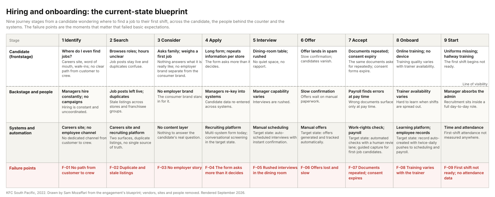

Several hundred restaurants, company-owned and franchised, hiring crew constantly. Most hires are first-job young people, many under the legal working age, and almost every restaurant manager is promoted from within, so the crew funnel feeds the whole management pipeline. A growth plan multiplied the demand.
My roleExperience Designer leading the research and design.
CollaboratorsThe people function as sponsor; operations, technology, marketing, finance and data; franchisee leaders; restaurant managers, shift supervisors, crew and trainees as participants.
ConstraintsFranchisee technology configuration out of scope. A third-party recruiting platform that was expensive to change and reported only on request. Age and parental-consent rules that lock parts of the workflow to compliance sign-off.
Key decisionThe admin burden is the experience. Design the automation around the moments that fail, and keep a person in the loop wherever a decision touches identity, age or consent.
StatusNine-stage blueprint, moments-that-matter verdict board, manager competency framework and the automated screening-to-interview workflow specification delivered. Implementation of the workflow sat with technology and the recruiting platform vendor.
{kind=link}

The problem
The people function had commissioned research with three questions: how do the current services enable the end-to-end team-member experience; how are recruitment and onboarding enabled; and what is expected of managers at each level. The evidence said the pain was structural. Systems were disconnected across channels. Candidates and managers re-keyed the same information. Nothing reported on recruitment performance. Processes were bypassed and varied by franchisee group. Interviews happened in dining rooms and food courts. First shifts began with trainees standing in hallways because uniforms had not arrived.
Two internal mantras framed the work, that the customer experience never exceeds the team-member experience, and that people come first and sales and profit follow. Neither had ever been operationalised for hiring. Manager churn was rising, which compressed the long tenure path from crew to restaurant manager that fed the pipeline. The business's theory was that hiring was hard because the labour market was hard. The early interviews contradicted it.
Every applicant lost to a repeated form or an unanswered offer was a crew member not hired, and every crew member not retained was a future manager not promoted. The funnel and the pipeline were the same thing.
What I did
- Episodic interviews in restaurants with managers, assistant managers, shift supervisors, crew and trainees, and above the restaurant with the people function, technology, operations, marketing, finance, data and franchisee leaders. Quotas oversampled first-job young people, parents and franchisee groups of different sizes.
- Observation, including sitting in on a live interview and a promotion-board review.
- A field survey of restaurant teams, a document review across operational, recruitment and technology material, and the funnel and turnover data the business already held.
- Synthesis into evidence-grounded personas, seven moments that matter with a pass or fail verdict on each, and a layered current-state blueprint across nine stages.
- A manager competency framework across three areas and three proficiency levels, to rebuild the top of the pipeline rather than only the bottom.
- The target-state workflow: screening questions in a conversation, auto-scheduled interviews for high-fit candidates, reminders and dispositioning, work-rights verification with a human review lane, and automated employee-record setup, all written as a versioned specification.
What the research found
The admin burden is the experience. Candidates uploaded the same documents more than once even when everything was correct. Managers re-keyed candidate data across systems. Offers landed in spam. The wait for a first human touch ran from days to weeks. The business had a labour-market theory; the evidence pointed at its own process.
Five of the seven moments that matter failed basic expectations. Finding the job, applying, the interview, the offer and starting all failed; considering the job and accepting it were merely weak. The experience was optimised for administration, not for the person going through it.
Two moments had no data at all. Nobody measured whether a hired crew member turned up to their first shift, and nobody measured retention at ninety days. The absence became a documented finding with an owner, not an invented number.
Work rights were the hardest part of the experience. First-job candidates did not know what documents they needed; consent forms expired; payroll discovered wrong documents at pay time. This is the step that most needed a person and least had one.
The manager pipeline needed a standard, not a rescue. Managers carried recruitment inside a full day, capability varied, and nothing said what was expected at each level. The competency framework answered the third research question directly.
Three decisions
Reframe from labour market to admin burden
Evidence. Candidates and managers describing the same re-keying; the funnel losing people at the form; offers lost to spam filters.
Alternative considered. An employer-brand and attraction campaign against the labour-market theory. Rejected as the lead: more applicants into a leaking funnel is more leakage.
What we did. Named the seven moments, gave each a verdict, and put the automation where the failures were: the application, the interview confirmation, the offer and the work-rights step.
Ask only what changes a decision, and automate the routing
Evidence. A multi-system form that asked more than it decided; managers texting candidates to arrange interviews; hires waiting on manual paperwork.
Alternative considered. A shorter form on the same process. Rejected: the delay was in the routing after the form, not only in the form.
What we did. Five screening questions in a conversation (minimum age, work rights, availability, shifts per week, high-demand shift), auto-scheduling for candidates who meet the availability rule, a review queue with the answers attached for everyone else, reminders at 24, 48 and 72 hours, and dispositioning after ten days without action.
Human lanes wherever identity, age or consent is decided
Evidence. Under-age applicants; consent expiry; work-rights documents that fail automated checks for innocent reasons; the cost of a wrong rejection for a first-job candidate.
Alternative considered. Fully automated verification with auto-rejection on failure. Rejected: a false negative on a sixteen-year-old's first job is not an acceptable error, and the compliance exposure is real.
What we did. Under-age applicants route to the parental-consent flow before any decision. Work-rights failures go to a payroll-admin review lane that accepts or rejects with a reason emailed. Age and consent logic is compliance-locked in the specification, so it cannot change without sign-off.
What was delivered

The workflow was written as a specification the technology team could version, review and test, rather than as tribal knowledge. This is the core of it.
sop: HIRE-001 Crew hiring workflow, application to first shift version 2.0 owner: people_function_recruitment_lead compliance_locked: true # age and parental-consent changes need sign-off screening: questions: [minimum_age, work_rights, availability, shifts_per_week, high_demand_shift] auto_schedule_if: high_demand_shift == YES AND shifts_per_week in [3, 4, 5] review_queue_otherwise: true underage_branch: parental_consent_flow_first # never disposition before consent is attempted interviews: scheduling: auto_scheduled, calendar_sync manager_actions: [confirm, invite, reject] reminders: [24h, 48h, 72h] disposition: after_10_days_no_action work_rights: verification: automated_checks # document, biometric, registry lookup human_review_lane: payroll_admin # accept or reject with a reason emailed onboarding: employee_record: auto_created pushes: [scheduling_12pm, scheduling_6pm] payroll_validation: full_pack_push_back_on_failure rehire_branch: same_franchisee_group: skip_work_rights_and_onboarding, transfer_record other: full_workflow, new_records kpis: [application_to_interview_days, funnel_dropoff, time_to_offer, first_shift_attendance, retention_90d]
Also delivered: the seven-moments verdict board, the persona set, the current-state blueprint below as a living document, the manager competency framework (three areas, three proficiency levels), conversation guides for the moments that stay human, and a manager one-pager for day one.
| Stage / lane | Identify | Search | Consider | Apply | Interview | Offer | Accept | Onboard | Start |
|---|---|---|---|---|---|---|---|---|---|
| Candidate (frontstage) | Where do I even find jobs?Careers site, word of mouth, walk-ins: with no clear path from customer to crew. | Browses roles; hours unclearRole pages and store listings, but job posts stay live and duplicates confuse. | Asks family; weighs a first jobNothing answers "what is it really like?": no employer brand separate from the consumer brand. | Long form; repeats info per storeThe form asks more than it decides: many visitors never complete it. | Dining-room table; rushedNo quiet space, no rapport: "we walked upstairs to the dining room, I gave my availability and that was it." | Offer lands in spamSlow confirmation; offers lost to spam filters; candidates vanish. | Documents repeated; consent expiryThe hardest part of the experience: same documents asked repeatedly; consent forms expire after seven days. | Online training; no deviceTraining quality varies with trainer availability: incomplete training spills into shifts. | Uniforms missing; hallway trainingFirst shift begins not ready; no data on first-shift attendance at all. |
| Backstage & people | Managers hire constantly; no campaignsHiring is constant and uncoordinated: "too hard to coordinate" campaigns. | Job posts left live; duplicatesStale listings and duplicate roles across stores and franchisee groups. | No employer brandNo dedicated employer content; the consumer brand stands in for it. | Managers re-key into systemsCandidate data re-entered across systems: error-prone and slow. | Manager capability variesInterviews are rushed; the dining room is not a quiet space. | Slow confirmationOffers wait on manual paperwork and manager availability. | Payroll finds errors at pay timeWrong documents surface only at pay time: the admin of starting is the friction. | Trainer availability varies"It's hard to learn when my shifts are spread out." | Manager absorbs adminRecruitment sits inside an already full day-to-day role. |
| Systems & automation | Careers site; no employee channelNo employee-dedicated channel from customer to crew. | Careers site + recruiting platformTwo surfaces, duplicate listings, no single source of truth. | No content layerNothing answers "what is it really like?" | Recruiting platform; AI assistantMulti-system form today; conversational AI assistant in the future state. | Auto-scheduling, calendarFuture state: auto-scheduled interviews with instant confirmation. | Automated offerFuture state: offers generated and tracked automatically. | Work-rights check; payrollAutomated checks with a human review lane; guided capture for first-job candidates. | Learning platform; employee recordsEmployee record auto-created with two daily pushes to scheduling and payroll. | Time & attendance; schedulingFirst-shift and 90-day retention have no data: documented findings. |
| Failure points | F-01 No path from customer to crewNo clear route into the funnel; hiring is invisible to the customer base. | F-02 Stale roles; duplicatesStale listings and duplicate roles confuse candidates. | F-03 Nothing answers "what is it really like?"No employer brand separate from the consumer brand. | F-04 Asks more than it decidesnearly half drop-off: the form's middle loses the most visitors. | F-05 No quiet space; no rapportDining-room interviews; rushed and inconsistent. | F-06 Offers lostOffers land in spam; candidates vanish without response. | F-07 Hardest part of the experienceDocuments repeated; consent expiry; first-time bank and tax setup. | F-08 Incomplete trainingTraining spills into shifts; quality varies with trainer availability. | F-09 + W No data on first shiftFirst-shift attendance and 90-day retention: no data: documented findings. |
Working files, anonymised: engagement brief, journey map, personas, proposals, research summary, blueprint.
How it would be measured
A hired crew member attending a first shift within two weeks of applying.
BaselinesThe careers-site funnel and application data the business held; the turnover series for assistant and restaurant managers. First-shift attendance and ninety-day retention had no baseline; instrumenting them was the first measurement task.
DriversApplication completion (question count, response time); interview attendance (auto-scheduling, reminders, dispositioning); admin completion (guided capture, review-lane latency, record pushes); first-shift readiness (uniform, buddy, checklist).
LaggingNinety-day retention; manager-pipeline health; manager turnover.
CadenceWeekly during rollout, monthly in run-state, with the two measurement gaps tracked as open findings until instrumented.
Held backPost-implementation figures are not published here.
The engagement, for a consulting reader
The people function; technology and operations as co-owners of the workflow.
Scope inThe end-to-end crew journey from identify to start across nine stages; the manager competency framework; the automation workflow design and its specification.
Scope outFranchisee technology configuration; the recruiting platform's internals; employer-brand campaign delivery.
Decisions requestedAdopt the admin-burden reframe as the programme's problem statement; approve the workflow specification with its human lanes and compliance locks; own the two measurement gaps; adopt the competency framework for manager development.
Timeline and gatesSixteen weeks: research (weeks 1 to 4), synthesis (5 to 7), mapping and the moments verdict (8 to 10), ideation and workflow design (11 to 14), specification and hand-over (15 to 16). No ideation before the insights held; no blueprint before the personas held up in rehearsal.
Risks managedFranchisee variance (workflow designed to run across every group's configuration); compliance exposure on age and consent (locked steps, consent-first branch); vendor cost of change (specification written for configuration over customisation).
What AI did and what stayed human
Fieldwork stayed human: consent, rapport and the decision to observe a real interview are not delegable, and neither were the interview quotas or the reframe. After the recording, AI helped: transcripts were pseudonymised and processed into evidence items with a participant code and a line range, every quoted line was checked against the transcript before it was kept, and the funnel and application exports were normalised into one leakage view. The personas, the moments verdict, the blueprint and the workflow design were people's work, reviewed with the people function at every gate.